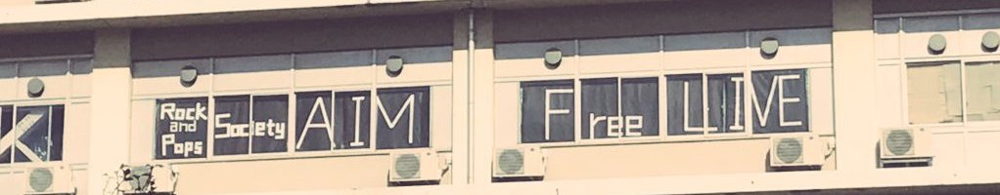

大学から楽器を始めた初心者の人や 中学・高校から楽器をやっていた経験者の人が バンドを組みながら切磋琢磨しています！ これから楽器を始めるのが不安な人も 先輩が優しく教えてくれるので ご安心ください！

千葉大学公認 軽音楽サークル「Rock & Pops 研究会 AIM」です 大学から楽器を始めた先輩が多く初心者の方にもオススメです！ もちろん経験者の方も大歓迎。バリバリ活躍して下さい！ いつでも部員を募集しています。 ご興味のある方はぜひお気軽にご連絡下さい！
About


Feature
-
初心者から経験者まで！
-
様々なライブ体験！
AIMは色々な場所でライブを行っています！ ・スタジオライブ ・教室ライブ ・ライブハウスの貸切ライブ ︙ 色んな場所でライブをしたい人にオススメ！
-
音楽好きがたくさん！
演奏だけではなく、 聴くことが好きな人もたくさんいます！ 邦楽、洋楽、ロック、ポップス、 アニソン、ジャズ、オルタナ、プログレメタル… 音楽好きのサラダボウルと化しています。 趣味の合う仲間が見つかるはず！ @AIM_cu_altarnat
Access
千葉大学 西千葉キャンパス 〒263-8522 千葉市稲毛区弥生町 1-33 音楽系・体育系サークル会館